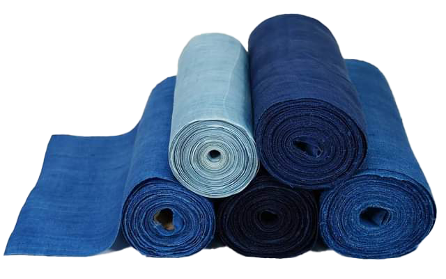

염색장
천연염료로 옷감을 물들이는 기술

제작과정
나주지역의 쪽염색 과정은 다음과 같다. 8월 초순경 60∼70㎝ 정도 자란 쪽을 베어 항아리에 넣고 삭힌다. 이틀 뒤 쪽물에 굴껍질을 구워 만든 석회를 넣으면 색소 앙금이 가라앉으면서 침전 쪽이 생긴다. 침전 쪽에 잿물을 넣고 다시 7∼10일 동안 발효시키면 색소와 석회가 분리되면서 거품이 생긴다. 꽃물 만들기라고 하는 이 과정을 거치면 염료물감으로 사용할 수 있다. 쪽물을 들이기 위해서는 새벽 3시에 정련해 놓은 옷감을 독에 넣고 4시 경에 건져 밖에서 말리는 과정을 거쳐야 하는데, 다음날 염료가 가라앉으면 또 물들이는 과정을 반복해야 한다. 물을 진하게 들이려면 이 과정을 8∼15회 정도 반복한다. 쪽물을 들이고 나면 잿물을 완전히 제거하여 다듬이질하여 보관한다.
사용재료
천연염료로 식물, 광물, 동물 등에서 채취한 원료를 그대로 사용하거나 약간의 가공을 통해 만든 염료를 사용한다.
특징
근대화 이후 급속한 화학 염색의 도입으로 인하여 천연염색의 전통이 끊겼으나 1970년대 이후 일부 장인들의 노력으로 그 맥을 살릴 수 있었다.
전승자
| 보유구분 | 이름 | 성별 | 기예능 | 지역 | 인정일 |
|---|---|---|---|---|---|
| 보유자 | 정관채(鄭官采) | 남 | 쪽염색 | 전남 | 2001-09-06 |
| 전승교육사 | 윤대중(尹大重) | 남 | 쪽염색 | 전남 | 2008-02-21 |
소재지
전남